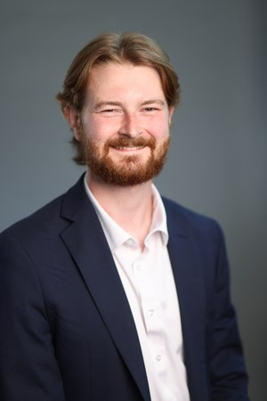

- Title: Mathematics PhD Candidate (Computational Science)
- Email: utleyj@purdue.edu
- Advisors: Greg Buzzard (Math), Charlie Bouman (ECE)
- Dissertation: Synthetic Data Generation for Aero-Optics
- Education: B.S. in Honors Mathematics, University of Tennessee (2022)
- Interests: Synthetic Data Generation, Computational Imaging, Inverse Problems, Scientific Software
- GitHub: github.com/jeffreyutley
- LinkedIn: linkedin.com/in/jeffrey-utley
- ResearchGate: researchgate.net/profile/Jeffrey-Utley
Download CV (PDF)
Research Bio
I am a PhD candidate in the Department of Mathematics at Purdue University (Computational Science concentration), developing statistically validated synthetic data generation algorithms and reproducible scientific software for turbulence-driven imaging and simulation. I work in the Integrated Imaging Lab under the guidance of Profs. Greg Buzzard and Charlie Bouman, with three years of DoD-funded research in active collaboration with the Air Force Research Laboratory (AFRL) and Air Force Institute of Technology (AFIT).
My algorithms simulate the complex optical distortions caused by high-speed aerodynamic turbulence. Using both physics-based models with modern statistical learning methods, I build validated synthetic data pipelines that serve as a “virtual testbed,” enabling engineers to evaluate and refine Adaptive Optics (AO) correction systems computationally and avoid the prohibitive costs of physical experiments. All algorithms are released as pip-installable, version-controlled Python packages with reproducible examples and full documentation.
Research at a Glance
- 4 first-author papers — Optical Engineering and Journal of the Optical Society of America A (both in press); 2 SPIE Optics + Photonics proceedings
- 2 open-source Python packages — AOModel and BoilingFlow, both validated on measured wind tunnel data
- 8 conference presentations — SPIE Optics + Photonics, Electronic Imaging, and Directed Energy S&T Symposia
- 3 years of DoD-funded research — AFRL Scholars Program (2024 & 2026) and ORISE/AFIT Doctoral Research Fellow (2025)
- Worst-case 4% NRMSE on the temporal power spectrum (ReVAR algorithm), substantially improving over existing methods
Open-Source Software
AOModel
pip-installable Python package implementing the ReVAR algorithm for data-driven synthesis of aero-optic phase screens. Validated on two wind tunnel datasets with worst-case 4% NRMSE on the temporal power spectrum.
pip install aomodelBoilingFlow
pip-installable Python package implementing Boiling Flow parameter estimation and anisotropic phase-screen generation; extends a Fourier-based synthesis method with automated parameter estimation, validated on measured wind tunnel data.
pip install boiling-flowTechnical Skills
Recent News
Leadership & Service
As Vice President of the Purdue SIAM Student Chapter, I lead the planning of social events to foster a collaborative student community. I also coordinate logistics for the annual SIAM Student Chapter Conference, providing a platform for research dissemination and professional networking (see the 2026 Conference).
Additionally, I co-organize the weekly Purdue SCAM/CCAM Lunch Seminar, where I facilitate technical exchange among graduate students and postdocs in computational science by recruiting speakers and managing seminar operations.
I also serve as a peer reviewer for Optical Engineering (SPIE), where I have reviewed two manuscripts since 2025.
Honors & Awards
- Doctoral Research Fellow, Oak Ridge Institute for Science and Education / AFIT (2025)
- SPIE Student Conference Support Award (2024)
- College of Science Graduate Student Travel Award, Purdue University (2024)
- John H. Barrett Prize, University of Tennessee (2022)
- Summer Undergraduate Research Internship Program Funding, University of Tennessee (2021)
About Me
Originally from Nashville, TN, I earned my B.S. at the University of Tennessee, Knoxville, where I enjoyed hiking in the Smoky Mountains (Mount Le Conte being a favorite). Since August 2022 I’ve been in West Lafayette, IN for graduate school, where I've found a similar enjoyment at nearby trails such as Wabash Heritage Trail, Prophetstown State Park, and Turkey Run State Park. Outside research, I enjoy live music in Indianapolis and Chicago — mostly genre-blending acts in blues, rock, jazz, funk, bluegrass, and country.